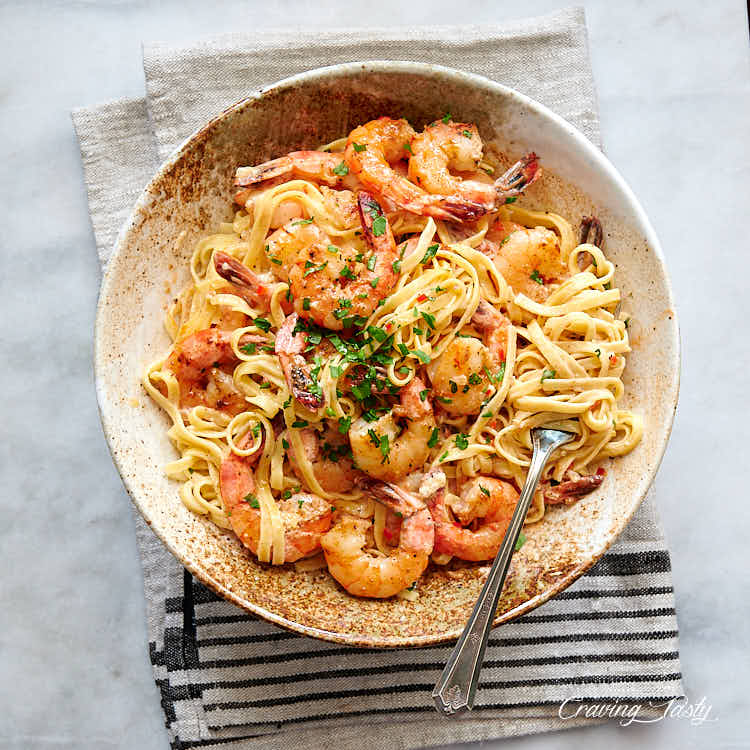

Garlic Shrimp Pasta
Want to make a delicious meal for your family or signiciant other?Try this recipe they will love it

Ingredients
- 1 teaspoon vegetable oil
- 1 (10 ounce) package penne pasta
- 3 tablespoons butter, divided
- 1 tablespoon minced garlic
- 1 pound uncooked medium shrimp, peeled and deveined
- 3 tablesppons chopped fresh parsley, divided
- 2 teaspoons chopped fresh dill
- 2 tablespoon all-purpose flour
- 1/2 cup chicken broth
- 1 cup milk
- 2 large tomatoes, chopped
- 1 tablespoon lemon juice
- 1 teaspoon salt
- 1 teaspoon ground black pepper
- 3/4 cup grated Parmesan cheese
- 1/2 cup grated Parmesan cheese
- 1/4 cup shredded mozzarella cheese
Steps
- Preheat the oven to 350 degrees F (175 degress C).
- Bring a large pot of lightly salted water to a boil. Add penne and cook, stirring occasionally, until tender yet firm to the bite, about 11 minutes. Drain.
- Heat 1 tablespoon butter and vegetable oil large oven-safe skillet over medium heat. Add garlic; cook until fragrant, about 30 seconds. Add shrimp, 2 tablespoons parsley, and dill. Cook and stir, flipping shrimp halfway, until pink, 3 to 4 minutes. Move shrimp to a plate and set aside.
- Melt the remaining 2 tablespoons butter in the skillet, stirring into the shrimp juices. Add flour; whisk until fully combined and starting to turn golden, 30 seconds to 1 minute. Add chicken broth and milk in that order; whisk to combine. Stir in tomatoes, lemon juice, salt, and pepper. Bring sauce to a simmer.
- Stir 1/2 cup Parmesan cheese and Romano cheese into the sauce until cheeses begin to melt and sauce is creamy. Add 1 tablespoon mozzarella cheese. Mix in about 1/2 the cooked penne to start; add more if there is enough sauce to coat. Add the shrimp and stir to combine. Top with the remaining parsley, Parmesan, and mozzarella.
- Bake in the preheated oven and bake until top is golden and sauce bubbles around the edges of the skillet, 8 to 10 minutes.